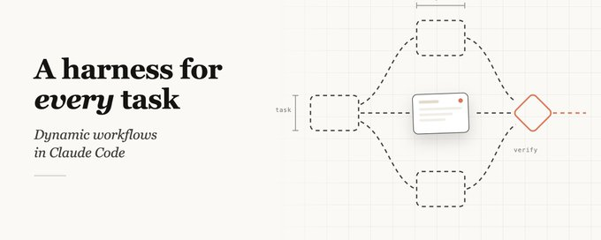

Claude Code 动态工作流： 每个任务都可以有自己的 Harness【译】
Claude Code 现在能即时写出属于它自己的 harness，为手头的任务量身定制。这套能力就叫 dynamic workflow：它会动态地编写编排脚本，在单个会话里运行数十到数百个并行的 subagents，并在任何结果送到你面前之前先自行检查一遍。
默认的 Claude Code harness 用来写代码很好，但研究、安全分析、agent teams、代码审查这类更专门的任务，过去需要在 Claude Code 之上搭一套定制 harness 才能达到最佳表现。
workflow 让你可以动态地创建这些定制 harness，它们可复用、可分享，能让 Claude 以比默认方式更原生的姿态去解决问题。
这篇文章我会分享自己使用 workflow 的初步体验和一些心得。要提醒的是，workflow 会消耗更多 token，更适合复杂、高价值的任务。
0.导读
导读章节为实践哥批注。
好文值得读，workflow 可能是由skill 发明一来，最好的发明。是 goal 的加强版，非常值得学习的一篇文章。深入浅出描写了 workflow 的各种适用场景。
内容偏长，可以按兴趣跳读。想直观感受它能干什么，看第 1 节；想弄清为什么需要它，看第 3 到第 5 节；想直接照抄落地方案，跳到第 6 节。
1.示例提示词：8 个例子，先直观感受 workflow 能做什么
2.workflow 的原理，本质是一段脚本
3.为什么需要 workflow
4.dynamic workflows 与 static workflows
5.使用 workflow 时的实用模式：6 种可复用套路
6.应用场景：迁移、研究、排序、排查、分类等九类落地场景
7.何时不该使用 workflow：很费 token，常规编码不必硬上
8.构建 workflow 的技巧：提示词、配合 /goal 和 /loop、token 预算、保存与分享
原文如下：


A harness for every task: dynamic workflows in Claude Code
Last week, we released dynamic workflows in Claude Code. Claude can now write its own harness on the fly, custom-built for the task at hand.
While the default Claude Code harness is built for coding,...
1.示例提示词
下面这些例子展示了 workflow 能做什么。你可以直接向 Claude 提出类似的请求：
- 让多个相互竞争的理论各自尝试，复现时好时坏的 flaky tests。
- 从过往会话中挖掘反复出现的纠正。
- 在 Slack 的事故频道里定位问题根因。
- 为一份商业计划获取多个视角的批评意见。
- 对简历进行排名，并加以验证。
- 用锦标赛式的筛选，为一个 CLI 工具命名。
- 对整个代码库执行重构。
- 对照实际代码，核实博客草稿里的技术论断。
2.workflow 的运作方式
workflow 会执行 JavaScript 文件，文件里包含用于生成和协调 subagents 的特殊函数。JSON、Math、Array 这些标准 JavaScript 工具可以用来处理数据。workflow 可以选择 subagents 使用哪个模型，并决定它们是否在隔离的 worktree 里运行。如果运行被中断，恢复后 workflow 可以从中断处继续。
3.为什么需要 workflow
默认的 harness 在单个 context window 内完成规划与执行。这对编码任务很有效，但碰到长时间运行、大规模并行、高度结构化或带对抗性质的任务就会出问题。具体会表现出三种失效模式：
- 智能体偷懒：面对复杂的多部分任务，Claude 会过早停止，只做完一部分就宣布任务完成，比如 50 项安全审查只处理了其中 35 项。
- 自我偏好偏差：当被要求对照 rubric 验证或评判结果时，Claude 会偏袒自己得出的结论。
- 目标漂移：在多轮交互中保真度逐渐流失，每一次总结都会丢掉细节，包括边缘情况的需求和各种约束。
workflow 的对策，是编排一批彼此独立、各自拥有独立 context window、目标聚焦又互相隔离的 subagents。
4.dynamic workflows 与 static workflows
此前，用 Claude Agent SDK 或 claude -p 构建的 static workflows，是以通用方式协调多个 Claude Code 实例，这要求你把所有边缘情况都覆盖到。有了 Claude Opus 4.8 和 dynamic workflows，Claude 现在能写出针对具体场景量身定制的 harness。
5.使用 workflow 时的实用模式
你可以直接请求一个 workflow，或在提示里用 ultracode 来确保 Claude Code 创建一个 workflow，从而触发它。常见的组合模式包括：
- 分类并执行：由一个 classifier agent 判断任务类型，据此路由到不同的 agent 或行为；也可以在任务完成时确定输出的分类。
- 扇出并综合：把任务拆成许多更小的步骤，每个步骤跑一个 agent，再综合所有结果。当大量步骤都能从干净、互不干扰的 context window 中受益时，这一模式尤其有用。综合这一步充当一个 barrier，它会等所有扇出的 agent 完成后，再合并它们的结构化输出。
- 对抗式验证：每生成一个 agent，就再跑一个单独的 agent，以对抗的姿态对照 rubric 或判定准则来验证它的输出。
- 生成并筛选：先就某个主题生成多个想法，再按 rubric 或验证来筛选，去重后只留下质量最高、经过检验的那些。
- 锦标赛：让 N 个 agent 用不同方法在同一个任务上互相竞争，而不是把工作分摊下去。由成对评判的 agent 决出胜者，直到只剩一个。
- 循环至完成：对工作量未知的任务，持续生成 agent，直到满足停止条件为止，比如不再有新发现、日志里不再有错误，而不是采用固定的遍数。
6.应用场景
- 迁移与重构：Bun 把 Zig 重写成 Rust 时就用了 workflow。把任务拆成一串串行步骤，比如调用点、失败的测试、模块，为每一处修复在 worktree 里生成 subagents，让 agent 做对抗式审查，然后再合并。要避开资源密集的命令，好让并行度最大化。
- 深度研究：Claude Code 的 /deep-research 技能就用了 workflow，它扇出网络搜索、抓取来源、对抗式地验证论断，再综合出一份带引用的报告。这个套路同样适用于非网络类的研究，比如汇编 Slack 上的状态报告，或者探索一个代码库的功能。
- 深度验证：对那种每条事实都要标注出处的报告，可以生成这样的 workflow：一个 agent 负责识别出各项论断，subagents 逐一详细核查，再由 verifier agent 确保来源质量。
- 排序：碰到需要定性衡量的大型条目列表，比如按缺陷严重程度给工单排序，在单个提示里给 1000 多行排名会拉低质量，还会撑爆 context。可以用锦标赛、成对比较的流水线，或者先并行分桶排名再合并；每一次比较都是它自己的一个 agent，context 里只保留当前的排序顺序。
- 记忆与规则遵循：当 Claude 即便把规则写进 CLAUDE.md 仍会漏掉某些规则时，可以创建带 rule verifier 的 workflow，一条规则配一个 verifier。再让一个 skeptic 人设来审查这些规则，防止误报。也可以反过来做：从近期会话和代码审查评论里挖掘反复出现的纠正，用并行 agent 聚类，对每个候选规则做对抗式验证，也就是问一句这条规则真能避免实际发生过的错误吗，再把幸存下来的规则提炼回 CLAUDE.md。
- 大规模分类处理：triage workflow 会对条目分类、跟现有跟踪记录去重，然后采取行动。一个有用的模式是 quarantine：读取不受信任公开内容的 agent，被禁止执行高权限操作，这些操作改由负责信息处理的 agent 来做。配合 /loop 就能持续运行。
- 探索与品味：在探索不同解法时很有用，尤其是设计或命名这种依赖品味的决策，它们能从 rubric 中受益。可以让 Claude 去探索解法，同时让一个 review agent 依据一套关于好方案的 rubric 来评判，满足审查标准时即告完成。方案可以排序，也可以基于 rubric 用锦标赛选出。
- 评估：可以这样跑轻量级 eval：在 worktree 里生成若干独立 agent，再生成 comparison agent，对照 rubric 给各项输出做比较和打分。比如对照特定标准来评估并改进已经做好的技能。
- 模型与智能路由：创建一个针对任务调校过的 classifier agent，由它决定用哪个模型。当任务涉及大量工具调用时这很有用，已有研究能指出哪个模型最合适。举例来说，解释一个鉴权模块怎么工作，取决于文件数量和代码库的形态；一个 classifier 会先做这项调研，再根据预期复杂度路由到 Sonnet 或 Opus。
7.何时不该使用 workflow
workflow 是新东西，并不是每个任务都需要它，它可能消耗多得多的 token。要有创造性地用它，把 Claude Code 推到常规用法之外。而对常规编码任务，先掂量一下是否真的需要额外算力；大多数传统编码并不需要五个 reviewer。
8.构建 workflow 的技巧
- 提示词：运用上面讲的那些具体技巧、把提示写详细，效果最好。workflow 不只用于大型任务，你也可以提示一个快速 workflow，比如对某个假设做一次快速的对抗式审查。
- 结合 /goal 和 /loop：对可重复的 workflow，比如分类、研究、验证，用 /loop 按固定间隔运行，用 /goal 设一个硬性的完成要求。
- token 用量预算：设一个明确的 token 预算来限制任务用量。在提示里写明上限，例如让它只用 10k token。
- 保存与分享 workflow：在 workflow 菜单里按 s 就能保存。把它们签入 ~/.claude/workflows，或者通过技能来分发。把 JavaScript workflow 文件放进技能文件夹，并在 SKILL.md 里引用。想更灵活的话，可以提示 Claude 把技能里的 workflow 当成模板，而不是逐字照搬的脚本。
9.探索的新起点
workflow 为扩展 Claude Code 提供了一种好用的新方式。把它看作一个起点，去探索用 Claude 完成任务的新方法。关于怎么把它用到最好，还有许多有待发掘。也欢迎你把自己的发现分享出来。
Want to publish your own Article?
Upgrade to Premium